After a great 2019 edition in Munich, mainly featuring Capella complimentary tools and add-ons, in 2020 we decided to focus on industrial MBSE case-studies.
Check-out the program featuring very interesting talks from Capella's feedback on experience from different engineering domains:
This event organized by Obeo, in partnership with Thales, Altran and TNO-ESI, brings together the community of Capella and Arcadia:
This year Capella Days happenned in conjunction with ESI webinar day, the 6th of October 2020.
Capella is an open-source and field-proven Model-Based Systems Engineering (MBSE) solution to successfully design systems architecture.
It provides systems, software and hardware architects with rich methodological guidance relying on Arcadia, a comprehensive model-based engineering method based on both industrial experimentations and system engineers' feedback
Natively supporting Arcadia , Capella can be customized to fit the specific needs of many industrial domains.
Capella Days is your opportunity to learn from Capella ecosystem members.
Discover the roadmap, get insights about methodology, MBSE trends and latest Capella features.
Benefit from the experience of industrial adopters who have sucessfully deployed an MBSE approach with Arcadia and Capella on their projects.
| Time | Session | Speakers |
|---|---|---|
| 4:00 pm CET | Welcome and Introduction | |
| 4:05 pm CET | Keynote: MBSE with Arcadia and Capella - Reconciling with the past and moving towards the future | Juan Navas (Thales) |
| 4:45 pm CET | Innovating with MBSE – Medical Device Example | Tony Komar (Siemens) |
| 5:25 pm CET | Successful Capella Landing on a CNES Operational Use-Case | Jonathan Lasalle (Artal/Magellium) |
| 6:05 pm CET | Closing |
| Time | Session | Speakers |
|---|---|---|
| 4:00 pm CET | Welcome and Introduction | |
| 4:05 pm CET | MBSE and the High-Tech Equipment Industry, how do they match up? | Teun Hendriks (ESI-TNO) |
| 4:45 pm CET | Capella Development Status & Future Work | Juan Navas (Thales) Minh Tu Ton That (Thales) Sandu Postaru (Thales) |
| 5:25 pm CET | Integrating MBSE and Life Cycle Assessment for Removing Plastics from the Oceans with The SeaCleaners | Arnaud Dieumegard (Obeo) Raphaël Pagé (Obeo) |
| 6:05 pm CET | Closing |
| Time | Session | Speakers |
|---|---|---|
| 4:00 pm CET | Welcome and Introduction | |
| 4:05 pm CET | Specification and Architecture of a System Factory for Space Systems using Capella | Elena Alaña Salazar (GMV) Tiago Manuel Da Silva Jorge (GMV) |
| 4:45 pm CET | An Adventure with Capella - A study from NEXTRAIL | Harish Narayanan (NEXTRAIL) |
| 5:25 pm CET | High-Speed Transportation Case-Study, by Virgin Hyperloop | Brandon Blau (Virgin Hyperloop) Betrand Knop (Virgin Hyperloop) |
| 6:05 pm CET | Closing |
| Time | Session | Speakers |
|---|---|---|
| 4:40 pm CET | Welcome and Introduction | |
| 4:45 pm CET | Modelling in a regulatory centric domain | John Andersson (Stille AB) |
| 5:25 pm CET | Arcadia/Capella Open Q&A Session | Jean-Luc Voirin (Thales) Juan Navas (Thales) |
| 6:05 pm CET | Closing |
MONDAY 12th of OCTOBER | 4:05 pm CET
Complex systems engineering programs not only deal with the inherent complexity of the systems they develop, but also shall be able to adapt very quickly to changes.
This requires adapting existing well-proven engineering practices in order to support shorter time-to-markets, more frequent variations in operational contexts and usages, and more complex engineering organizations. In this talk, Juan Navas will present the latest methodological progress on Arcadia and Capella that tackle these stakes.
| 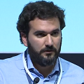 |
Juan Navas (Thales)Juan is a System Architect with +10 years’ experience on performing and implementing Systems Engineering practices in industrial organizations. He currently leads the team that accompanies managers and architects implement MBSE approaches on operational projects, helping them define their engineering schemes, objectives, and guidelines. He holds a PhD on Computer Science, a MSc on control and computer science, and Electronics and Electrical Engineering Degrees. |
MONDAY 12th of OCTOBER | 4:45 pm CET
Sustained innovation is a goal of many development organizations. Sustaining innovation is depicted on an Innovation as matrix as the result of well-defined problem, and a well-defined domain definition. An example will be presented how an MBSE tool, based on open source tool Capella, can enhance both the problem definition and domain definition of a ventilator. It will show how the MBSE tool enhanced the understanding of the problem, and how that understanding can lead to an innovative solution.
| 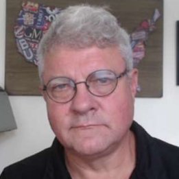 |
Tony Komar (Siemens)Tony Komar has been practicing and supporting systems engineering for over 35 years. His career began as a System Engineer supporting the development of engine and flight controls in the early 80’s. He led his team supporting FADEC I for CF6 engine control through FAA software certification.His research and development of flight control system based on COTS platforms, led him to work 10 in consulting in the automotive controls domain. Helping customer establish architecture their rapidly growing software control systems. He joined Siemens 17 years ago and has helped customers establish Requirement management and Systems Engineering solutions in variety of industries. In 2011, Tony completed a Master of Engineering in System Engineering from Penn State University and turned a focus toward architecting Siemens solutions. Today he is a key contributor to the development and deployment of Model Based System Engineering products for Siemens Digital Industries Software. He not only is enabling Siemens staff on MBSE tools, but is also working with the next generation of engineers by developing “open” hands on training in electronics and systems engineering though open source products and electronics. |
MONDAY 12th of OCTOBER | 5:25 pm CET
The Space Variable Objects Monitor (SVOM) is a space system dedicated to gamma ray detection and study, under development by China National Space Administration (CNSA) and the French Space Agency (CNES), to be launched in 2021. The system shall be able to trigger alerts of Gamma Ray Burst (GRB) in real-time with a maximum of associated data. It is composed of a space segment (a set of various sensors embedded on a satellite) associated to a worldwide antenna ground network, all managed by the two agencies.
The design of this system was conducted within the framework of the CNES engineering process, based on a set of documents cascading the textual requirements from the high-level concept of operations to the technical specification of equipment. The validation of the obtained specification mainly relies on human expertise and on the validation campaign. The complexity of the system made it a perfect candidate for an experimentation of MBSE using Capella. Two projects took place successively in this context: a first one was an R&T study, dedicated to the analysis of the current process and the evaluation of the potential benefits that MBSE could bring (restricted to some part of the system but spread on several engineering layers (architecture, simulation, satellite database definition...)). Due to promising results, a second project, based on the models realized during the first study, was dedicated to the operational capture of the system validation.
The smooth incursion of Capella in CNES engineering process was undeniably well received. The SVOM experts were converted to this new way of working. The building of an operational model-based toolchain to capture the system architecture and its associated V&V specification is an achievement which opens the door to a wider reach of MBSE within CNES.
| 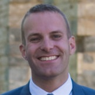 |
Jonathan Lasalle (Artal/Magellium)Jonathan Lasalle is in charge of MBSE-related activities at Artal/Magellium. His daily job mainly consist in guiding engineers through the introduction and the propagation of the MBSE principles on their own context. In addition to providing training sessions (principally Capella-based), he manages third-part software customizations (Capella viewpoints, Papyrus extensions...) and he is the architect of the Citrus framework dedicated to the model-based capture of the simulation means specifications. |
TUESDAY 13th of OCTOBER | 4:05 pm CET
MBSE is by now widely adopted in the Aerospace and Defense industry. These industries however typically develop their systems with very large, one-of-a-kind system projects, following the V model. A large upfront (MB)SE effort is justified then as the cost of late failures are extremely high.
The High-Tech Equipment Industry on the other hand develops their systems incrementally with an agile Systems Engineering process, supporting many product variants and often a configure-to-order sales process.
How does MBSE match up with the characteristics of the High-Tech Equipment Industry? ESI and its partners have started a collaborative project to study together whether, and if so how, MBSE, or MBSE elements, can improve Systems Engineering in this industry business context.
This talk will provide an update on the state of SE in the High-Tech Equipment Industry, its use of models, and the outlook on the fit of MBSE in this industry context.| 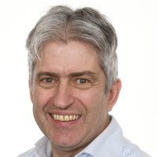 |
Teun Hendriks, Senior Research Fellow (TNO-ESI)Teun is an experienced system architect with a keen interest to advance the field of Systems Engineering. Creating order out of chaos, shaping the ‘fuzzy front end’ of systems engineering is what intrigues him. His professional interest is to understand what foundations and way-of-working help design teams to better make the crucial design decisions early on and so better navigate this fuzzy front end. His competencies include system architecting; systems thinking; technical leadership; road mapping; planning and monitoring; facilitation and coaching; all in a systems engineering context. Teun Hendriks has worked across the globe with US, European, and Asian clients in diverse product areas, ranging from semiconductors, consumer & automotive electronics, professional vehicles (trucks) to complex high-tech cyber physical systems, and has worked both on systems as service aspects. |
TUESDAY 13th of OCTOBER | 4:45 pm CET
In this talk Thales’ Capella development team will present some of the latest Capella features and enhancements, noteworthy add-ons from the Capella eco-system, and what future work will bring to the tool.
Juan Navas (Thales)Juan is a System Architect with +10 years’ experience on performing and implementing Systems Engineering practices in industrial organizations. He currently leads the team that accompanies managers and architects implement MBSE approaches on operational projects, helping them define their engineering schemes, objectives, and guidelines. He holds a PhD on Computer Science, a MSc on control and computer science, and Electronics and Electrical Engineering Degrees. |
|
Minh Tu Ton That (Thales)After earning my PhD in Computer Sciences from University of Southern Brittany, I entered the industry world to explore my passion for software development. For over 5 years, I work as a software developer at Thales Global Services, where I involve in different activities related to the development of Capella product, including software design, coding, product integration, etc. I am interested in all things tech-related and I spend my free time learning new programming languages and technologies. I enjoy watching sci-fi movies, playing badminton and walking in Saint-Cloud park on a sunny day. |
|
| 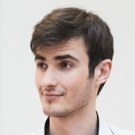 |
Sandu Postaru (Thales)Sandu is a Software Engineer with 2+ years experience, participating in the agile development lifecycle of Capella. Open Source enthusiast and Eclipse committer, he is passionate about clean code, performance optimization and loves to work on challenging technical problems. |
TUESDAY 13th of OCTOBER | 5:25 pm CET
More than 8 million tons of plastic are dumped in the oceans every year. If we don’t take action, in 2050, there will be more plastic than fishes in the oceans!
The SeaCleaners association has been founded to provide global, long-term and worldwide solutions for fighting against ocean plastic pollution. The flagship project initiated by The SeaCleaners is the MANTA, the first seagoing vessel capable of collecting and processing in continuous flow large quantities of macro plastic waste floating at the surface of oceans.Its design has been focusing on many innovative technologies in the field of renewable energy production or by limiting her global carbon footprint maximizing the energy self-sufficiency.
In this talk we will present a Capella extension developped by Obeo in partnership with The SeaCleaners and Altran to facilitate the Life-Cycle Assessment (LCA) of complex systems. This extension consists of additional concepts added to Capella for inventorying components' physical characteristics and the substances they consume and/or emit. This information attached to the system architecture can be automatically exported as an initial inventory analysis to LCA tools used by environmental experts to perform their impact analysis (such as SimaPro and OpenLCA).
Experimented on a MANTA subsystem, we will show how this integration between Capella and LCA Tools accelerates the evaluation of the impacts a system has on its environment, and helps system designers to make architecture decisions that are better for the planet.
| 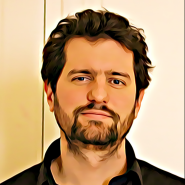 |
Arnaud Dieumegard (Obeo)Arnaud is a Software Engineer specialist in Model-Driven Development. He holds a PhD from IRIT on automated code generation verification for critical embedded systems. |
Raphaël Pagé (Obeo)Raphaël is a Software Engineer at Obeo. |
WEDNESDAY 14th of OCTOBER | 4:05 pm CET
The deployment of Model-Based System Engineering in space projects is not straightforward. The interactions among stakeholders at various levels happen to be difficult because the various tools involved are not fully interoperable.
One of the key elements that would facilitate and ensure the exchange of engineering data information, is the definition of a System Engineering supporting infrastructure, also called System Factory, that would allow implementing this interoperability.
This presentation introduces the approach that is being followed to define the functional architecture of this System Factory which follows the Arcadia method and uses the Capella tool.
| 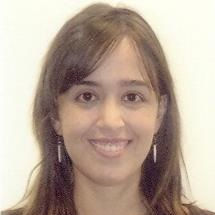 |
Elena Alaña Salazar (GMV)Elena Alaña is the Software Engineering Section Head of the Space Segment and Robotics Business Unit at GMV. She entered GMV’s ranks in 2006, and has been mostly involved in operational projects (e.g., Sentinel-3, Intermediate eXperimental Vehicle-IXV) and R&D activities for the European Space Agency. She has an excellent knowledge on modelling languages, tools and methodologies based on her experience using MBSE for the Space Systems and on the prototype development of several software engineering tools for ESA and the European Commission |
| 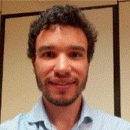 |
Tiago Manuel Da Silva Jorge (GMV)Tiago Jorge is a Software Engineer in the Space Segment and Robotics Business Unit at GMV. He has an important background and special interest in model driven methodologies. He has in particular participated in projects involving co-engineering processes, namely software-hardware, and system-software. He was a trainee at the European Space Agency (ESA), within the Software Systems division, before joining GMV in 2017. |
WEDNESDAY 14th of OCTOBER | 4:45 pm CET
In this talk, Harish will share his experiences on a project where he had to develop system requirement specifications for an Automatic Train Operation -Trackside (ATO-TS) system, one of the key components that helps with Automatic Train Operations.
He will present his personal experiences with Capella, as a new user, and will explain the different focus points where NEXTRAIL applies Capella including systems modelling and data modelling (for Interfaces).
You will discover the project specific analysis with Capella and will get answers of the following questions:
Harish Narayanan (NEXTRAIL)Harish is a railway engineer expert in Automatic Train Operation systems. |
WEDNESDAY 14th of OCTOBER | 5:25 pm CET
Virgin Hyperloop is developing a system that can propel passenger or cargo pods at speeds of over 1000 km/h. That is 3x faster than high-speed rail and more than 10x faster than traditional rail.
In this talk, Brandon blau and Bertrand Knop will present how Capella is used on this project.
| 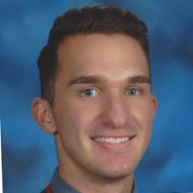 |
Brandon Blau (Virgin Hyperloop)Systems Engineering professional in Los Angeles with Electrical and Computer Engineering background and experience working with systems in the Military Air and Space industries. Unique understanding of electronic and hardware intersection through professional experience and advanced coursework. Demonstrated ability to address big-picture requirements at the ground floor, and excellent skill developing effective intra-team and customer relationships, both of which reliant on clear and developed communication abilities. |
Bertrand Knop (Virgin Hyperloop)Bertrand is System Engineering Manager at Hyperloop One. He has 14 years of experience in specifying, designing, qualifying and supporting complex aircraft systems (airframe, avionics, mechanical and weapon systems). |
THURSDAY 15th of OCTOBER | 4:45 pm CET
The medical device domain is heavily driven by regulatory requirements and processes that to many feel very old fashion. The aim for these notifying bodies is to ensure safety for the patient, user and environment. Even though the concept of MBSE is widely accepted when it comes to execution of a project it still often waterfall and V-model methodology.
For long medical device development has been document focused domain and we with it. Now we exploring to move into a modelling centric way of developing our products, and it’s not only technical issues but processes, readability, accessibility and teamwork that we need to adjust.
| 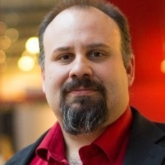 |
John Andersson (Stille AB)John is the VP of Product Development at Stille AB in Sweden. A company that has been developing medical devices since mid-19th centaury. He has a broad experience from system engineering in different technical domains ranging from MedTech to defence to power transmission (HVDC). What defines his work is engineering transformation and he likes to be hands-on. |
THURSDAY 15th of OCTOBER | 5:25 pm CET
Ask questions in advance or live to Arcadia and Capella experts.
To submit questions please go to the Q&A session page
Juan Navas (Thales)Juan is a System Architect with +10 years’ experience on performing and implementing Systems Engineering practices in industrial organizations. He currently leads the team that accompanies managers and architects implement MBSE approaches on operational projects, helping them define their engineering schemes, objectives, and guidelines. He holds a PhD on Computer Science, a MSc on control and computer science, and Electronics and Electrical Engineering Degrees. |
|
| 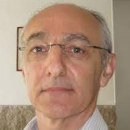 |
Jean-Luc Voirin (Thales)Jean-Luc is Director, Engineering and Modeling, in Thales Defense Missions Systems business unit and Technical Directorate. He has been an architect of real-time and near real-time computing and mission systems on civil and mission aircraft and fighters. He is the principal author of the Arcadia method and an active contributor to the definition of methods and tools. He is involved in coaching activities across all Thales business units, in particular on flagship and critical projects. |